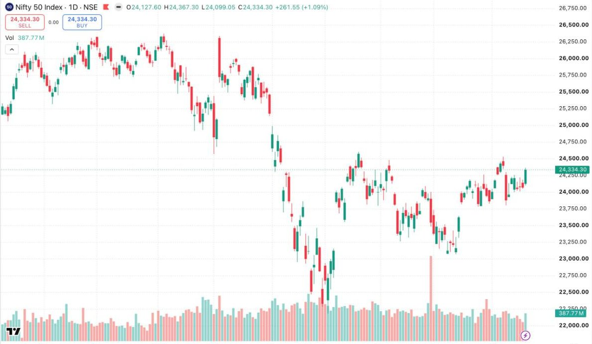

Market Structure: Trends, Ranges & Swings
Strip away every indicator from a chart and something remains: price leaves a trail of swings — points where an advance stopped and reversed, or a decline exhausted and turned. That skeleton is market structure, and reading it answers the only strategic question that matters: who is currently in control, and where would we find out they've lost it?
Swing highs and swing lows
A swing high is a peak with lower highs on both sides — a place where buyers pushed, ran out of aggression, and sellers took over. A swing low is the mirror image. These points matter because real decisions happened there: traders entered, exited, got stopped out. The market remembers them, because the people who traded there remember them.
The definition of a trend — in structure terms
An uptrend is not "price going up". Structurally, an uptrend is a sequence of higher swing highs and higher swing lows. Each pullback bottoms above the previous one; each push tops above the last. As long as that sequence holds, buyers are in control — pullbacks are being bought earlier each time.
This gives you something priceless: an objective test for when the trend is over. An uptrend is in question when price fails to make a higher high, and it is structurally broken when price takes out the most recent higher swing low. Until that happens, everything else — scary red candles, headlines, your own nerves — is noise within an intact structure.
HH → HL → HH → HL → HH buyers in control
warning: push fails to make a new HH
broken: price closes below the last HL structure lost
Ranges: where trend rules stop working
Markets trend far less often than beginners assume. Much of the time price is in a range — oscillating between a zone of buying interest below and selling interest above, while the market digests the last move or waits for new information. Ranges are where trend-following techniques quietly bleed money: every "breakout" fades, every strong candle reverses, because inside a range, strength gets sold and weakness gets bought.
The professional adjustment is simple to state and hard to practise: first classify, then trade. If the chart shows a clean sequence of higher highs and lows (or lower lows and highs), trend logic applies. If price has crossed the same middle ground repeatedly with no follow-through, range logic applies — or better, for a developing trader: stand aside and wait for the range to resolve.

Structure across timeframes
Structure exists on every timeframe simultaneously, and they nest: a pullback on the daily chart is often a full downtrend on the hourly. This is not a contradiction — it's magnification. The practical rule: define control on the higher timeframe, refine entries on the lower. When both point the same way, you have alignment. When they conflict, the higher timeframe is the one paying the bills.
Pullback or reversal? The three tells
Every trend trader's central question: is this dip a gift or a warning? No answer is certain, but three observable tells stack the odds:
- Depth: healthy pullbacks in a trend commonly retrace a third to two-thirds of the prior push. A "pullback" that swallows the entire previous leg isn't pulling back — it's contesting control.
- Character: corrective moves are typically slow, overlapping, small-bodied — reluctant selling in an uptrend. When the counter-move is impulsive (large bodies, closes at extremes, expanding volume), treat it as the possible start of the other side's trend, not a dip.
- What happens at the level: the pullback arrives at the prior swing or zone — does it stall and print absorption (Lesson 02), or slice through as if the level weren't there? The reaction at the level is worth more than any indicator.
Zones, not lines
Beginners draw support as a one-pixel line and feel betrayed when price trades 0.4% below it and reverses. Institutions do not transact at one tick; they accumulate across an area. Draw zones — from the extreme wick to the cluster of closes — and expect the edges to be fuzzy. This single change eliminates two classic errors at once: panicking on a wick through the "line", and placing stops exactly where every other retail stop sits (the top or bottom of the obvious line, i.e., inside the liquidity pool from Lesson 11).
A multi-timeframe walkthrough
WEEKLY: HH/HL sequence intact → campaign = long-biased
DAILY: price pulling back to prior swing zone → location = interesting
HOURLY: downtrend INSIDE the daily pullback → timing = not yet
TRIGGER: hourly makes its own HH/HL turn inside the daily zone → aligned
Invalidation: below the daily zone = idea wrong on the timeframe that pays.
Notice the discipline: the higher timeframe sets the story, the location comes from structure, and the lower timeframe is only allowed to say when — never to overrule whether. When the hourly is screaming long but the daily structure is broken, the answer is still no.
COMMON MISTAKES AT THIS STAGE
- Counting every wiggle as a swing. A swing that matters shows displacement — meaningful distance and time from the prior one.
- Calling the trend broken on a wick through the last HL. Structure decisions use closes and follow-through, not single prints.
- Trading ranges with trend tools, then trading the eventual breakout with range tools — always classify first.
- Anchoring to structure from months ago on a 5-minute chart. Each timeframe's structure has its own shelf life.
KEY TAKEAWAYS
- Structure is the trail of swing highs and lows — the market's decision points.
- A trend is a sequence (HH/HL or LL/LH), and it gives you an objective "until here" line.
- Ranges punish trend logic; classify the environment before applying any technique.
- Higher timeframe defines control; lower timeframe refines execution.
PRACTICE THIS WEEK
Print or screenshot three daily charts. Mark every meaningful swing high and low by hand, label the sequence (HH, HL, LH, LL), and write one line per chart: "Who is in control, and what price would prove they've lost it?" Do this until it takes under a minute per chart.
Go deeper with the Professional Trader Program
Structure, price action and multi-timeframe analysis — taught live on current markets.
Request Program Details